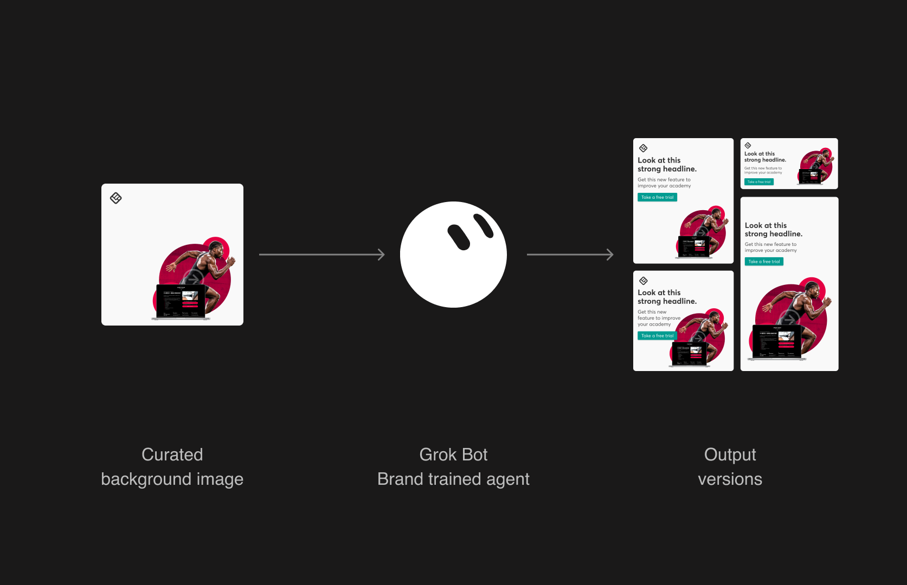
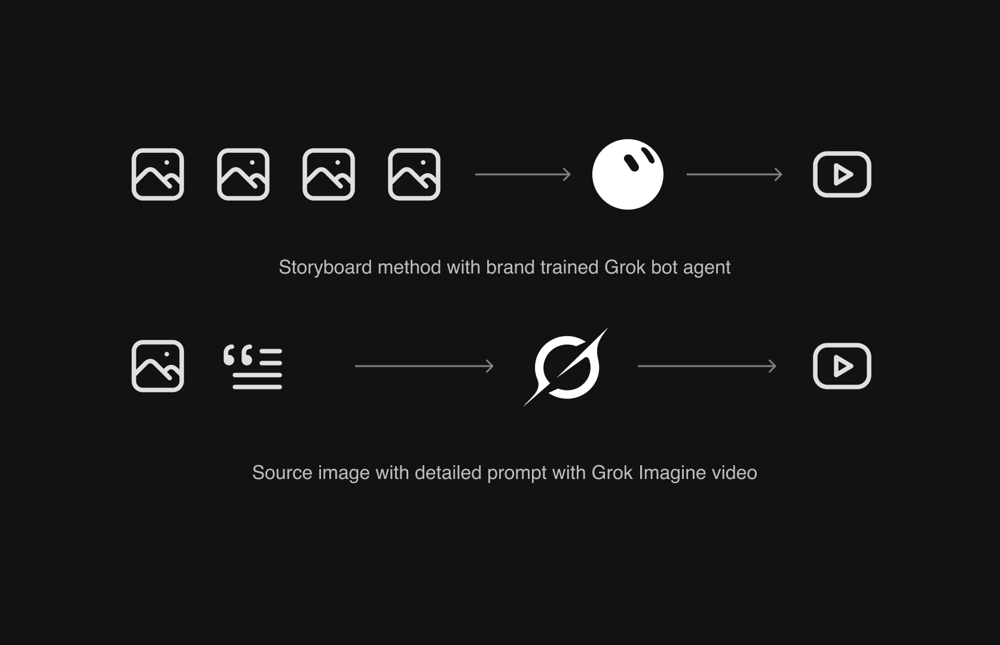
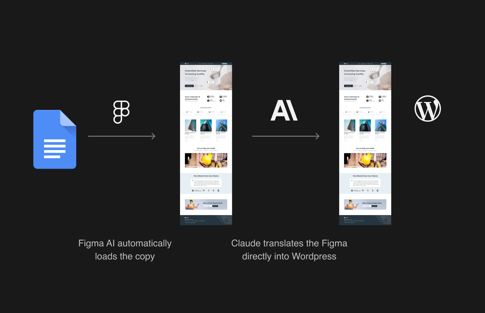

AI Creative Workflows
Faster brand work at scale
Beneath, I've listed the three workflows that we're currently using to produce image ads, video generation, and automated web page. These are dynamic, and as the models are constantly updating, we do adjust for any model that we find has become better or worse. So it's a fast evolving dynamic situation, but these are the ones that are working the best at the moment..


Image/Ads
Curated backgrounds, every size in minutes
I trained Grok Bot agents on our brand standards and ad sizes. Asking models to build whole ads gave us generic, hallucinated results, so we switched to curated, on-brand backgrounds for each line of business, with the logo already baked in. Marketers attach a background and write the headline, copy, subhead and call to action. Once the square version is approved, the agent produces every other size in moments.
Video generation
Storyboard in, video out
We use two routes. For exact control, we build a storyboard as images and upload the frames in order to a Grok video agent trained on our videos, then tell it the length, aspect ratio and soundtrack we want. For quicker work, we upload a source image, write a detailed prompt and let Grok Imagine animate it in the ratio we need. That second route gives our static text ads gently animated backgrounds, which have done especially well in Google Ads.


Webpage automation
From Word doc to live page
Copy and page structure arrive in a Word doc. A Figma agent reads it and drops in the right components from our design system, giving us a design that's about 90% there. Once we've tweaked and approved it, a second agent, written with Claude, transposes it straight into WordPress using the same design-system components. AI builds the pages, and designers steer the final 10%.